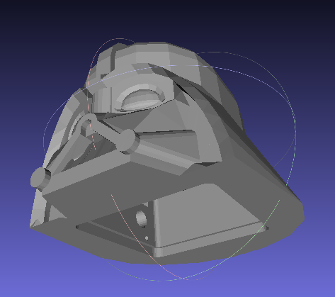
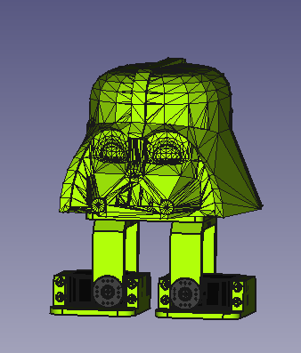

<center>

<h1>Zowifier</h1>
<h3>Proof of concept</h3>



<p>&nbsp;</p>

<h3>1. Scale and center your STL with Cura</h3>


<p>NOTE: Hole is aprox 80x80x80 mm</p>

<h3>2. Select your STL file and press Zowify!</h3>

<p>A zip file with all the parts will be downloaded</p>

<form id      = "uploadForm"
      enctype = "multipart/form-data"
      action  = "/upload"
      method  = "post"
>
	<input type="file" name="userFile" accept=".stl"/>
	<input type="submit" value="Zowify" name="submit">
</form>

<h3>3. Print your Zowi parts and enjoy!</h3>



</center>
